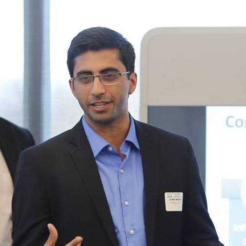

Ritwik is a tech professional currently pursuing his MBA at Kellogg School of Management. He loves talking about technology and watching the tech startup scene.
- Conceptualized and launched campaigns to increase app installs and engagement
- Gamification – launched the first fully integrated game within the app (industry first)
- Growth Projects - Working on growth projects across the organisation
- Handled Books and General Merchandise categories
- Responsible for Strategy, analysis and program management of sales, operations and new category launches
- Built a central strategy desk for all categories of marketplace to take care of both sales and operations needs
- Leading Merchandising activities for all categories, Sales increased by more than 50% in first 3 months
- Led a team of 14 across 6 locations to gain industry dominance in Media Categories (Home Video and Music)
- Profitability Initiatives
o Analysed Financial Strength of the categories and created a plan of action for increasing GM
o Created a scalable sales forecasting method for Home Video to reduce incorrect inventory pickup
o Revamped pricing structures to eliminate operational losses.
o Negotiated increase in product margins by an average of 2% with some of the major vendors
o Implemented a new cost effective warehousing and sourcing structure
- Developed and implemented merchandising and marketing strategies
Fast and Easy Loans